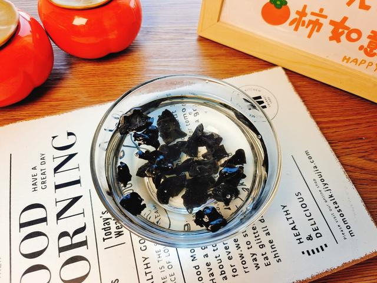
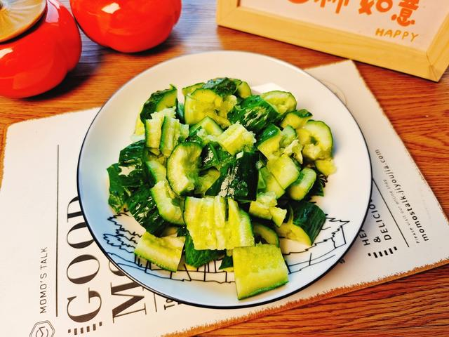
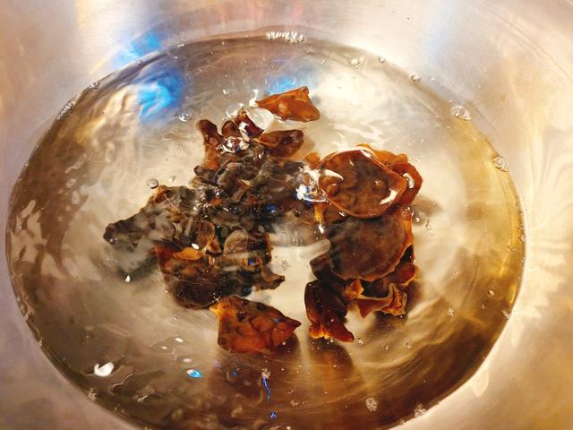
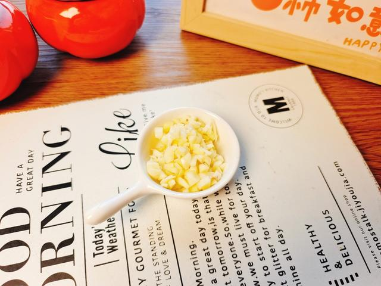
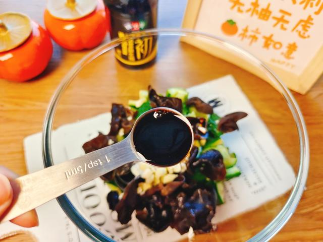

01 · 本课目标
为什么最后学凉拌？
同阶段的焖饭和煎肉都偏“荤”，最后用一道清脆的凉菜平衡口感，也让你第一次练习“不靠火做饭”。
本课记住一句话：调味汁在小碗里调好、尝过、再倒进菜里——永远不要把调料直接撒在黄瓜上然后祈祷味道均匀。
02 · 用料
买这些就够了
干木耳一次泡一小把就够；泡发后会膨胀好几倍，千万别贪多。
香油几滴 糖平衡酸味；香油提香，不用多。
还需要：一口小锅、一个拌菜盆、一把刀、一块案板。喜欢吃辣，可以额外加半勺辣椒油或一个小米椒。
03 · 跟着做
五步，十分钟上桌
木耳提前泡好，真正动手只需要十分钟，适合放进任何一餐当“凑数菜”。
第一段 · 准备（约 5 分钟）
-
STEP 泡发 · 提前 30 分钟
泡木耳，洗净撕小朵
干木耳用冷水泡 30 分钟，泡好后去蒂，流水冲洗两遍，撕成一口大小的小朵。
看到这样算对：木耳完全展开、摸起来有弹性，没有硬芯；撕完大小差不多，方便一口一块。

-
STEP 备菜 · 约 3 分钟
黄瓜拍裂切段
黄瓜洗净，用刀面平拍一下让它裂开，再斜切成约 3 厘米的段；大蒜切末。
看到这样算对：黄瓜裂而不碎，切面不规则——这种切面才挂得住汁。

-
STEP 焯水 · 约 3 分钟
木耳焯水 2 分钟，过凉沥干
小锅烧开水，放木耳煮 2 分钟，捞出立刻过一遍凉水或凉白开，再用力挤一下沥干。
看到这样算对：木耳颜色变深、手感滑弹；沥干到盆底不积水，否则会稀释凉拌汁。

第二段 · 调味（约 3 分钟）
-
STEP 调汁 · 约 1 分钟
在小碗里调好万能汁
小碗放蒜末、生抽、香醋、糖、香油，搅拌到糖化开。尝一口：酸了加糖，咸了加水或醋，甜了加一点生抽。
看到这样算对：味道入口先是酸咸，后味带一点甜和蒜香；尝起来“刚好有点抢”就对了，拌上黄瓜后会变淡。

-
STEP 拌匀 · 约 2 分钟
倒汁拌匀，静置 5 分钟更入味
把黄瓜、木耳放进拌菜盆，淋上汁，戴上手套或拿筷子从底部往上翻拌。拌好后静置 5 分钟再吃。
看到这样算对：每块黄瓜都挂上薄薄一层汁，盆底没有积一大滩；黄瓜依然脆，木耳依然弹。

04 · 翻车急救站
凉拌菜也能“翻车”？
主要是调味失衡和出水，都有简单救法。
太酸或太咸
为什么：醋或生抽一次放多了。
现在怎么办：太酸补一点糖和香油；太咸补一点醋和糖，或者再加半根黄瓜进去稀释。
下次避免：先放 3/4 的量，尝过再决定要不要补。
拌完盘底一滩水
为什么：黄瓜提前撒盐，或木耳没挤干。
现在怎么办：把菜夹到另一个盘里，盆底的水倒掉；水不要拌回去，味道不会淡太多。
下次避免：木耳焯后挤干，黄瓜临吃前再拌。
木耳没熟透或太硬
为什么：泡发时间不够，或焯水太短。
现在怎么办：捞出来回锅再煮 2 分钟，重新过凉沥干再拌，不影响整道菜。
下次避免：木耳泡到没有硬芯再下锅，水开后至少煮 2 分钟。
蒜味太冲
为什么：蒜末刚切完就拌，没有时间让辛辣味变柔和。
现在怎么办：再等 10 分钟再吃，蒜味会自然变淡；或者把蒜末挑出来一部分。
下次避免：让蒜末在凉拌汁里泡 5 分钟再拌菜。
05 · 学会标准
怎么算“学会了”？
这道菜通过，意味着你的“万能凉拌汁”已经毕业了。
-
1
黄瓜脆、木耳弹 口感分明，不是软塌塌的一盘。
-
2
每块都均匀入味 没有一块咸一块淡。
-
3
调味汁不抢也不寡 酸咸甜平衡，吃完想再夹一筷子。
-
4
能默写万能汁配方 生抽 1 : 醋 1 : 糖半勺 : 香油几滴，不用翻菜谱。